WHO WE ARE
The Bettering Branch is a Singapore-based ground up youth-led non-profit focused on empowering youths with empathy through connection, education and service. We do this one branch at a time with our 3 branches of impact: Planet, People & Advocacy.
OUR MISSION
We believe empathy can make the world go round.
So we hope to lead & champion it amongst Singaporean
youths, dismantling the 'checkbox' culture of youth volunteerism in Singapore
& lowering the barriers to civic engagement through connnection, education & service.
We aspire to be a platform where youths can come together to connect,
empathise, lead.
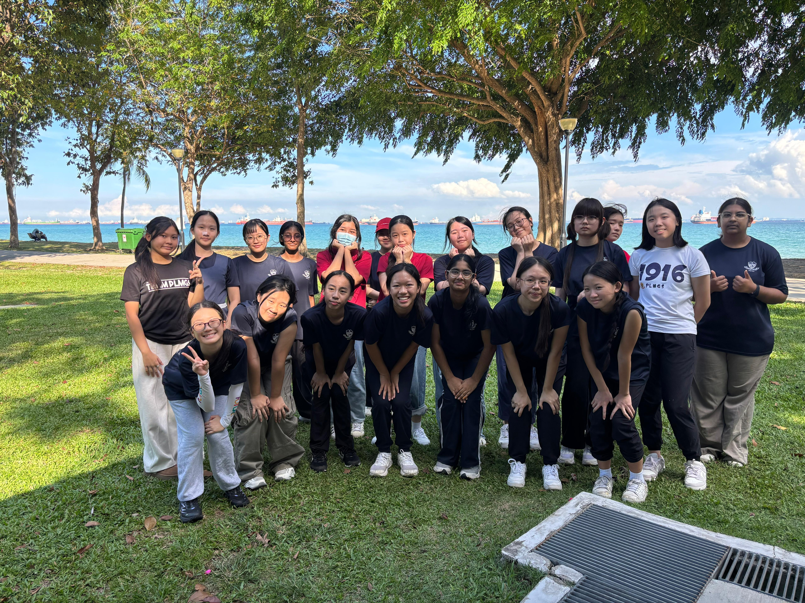


OUR PARTNERS/COLLABORATORS
As a ground up initiative that started with 0 partners, resources and funding, we are proud to boast an extensive list of over 70 partners attained through cold emails, texts and outreach (though we'll caveat a few found us too! - which is proof that (YOU)ths indeed can make an impact from scratch)
YOUTH COLLABORATORS

-modified.png)


-modified.png)

-modified.png)


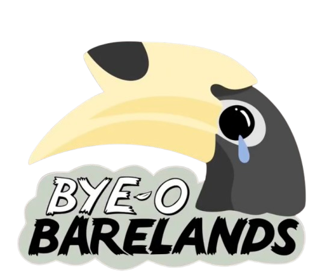
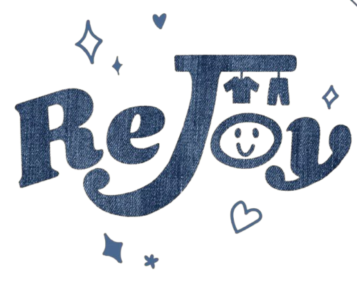
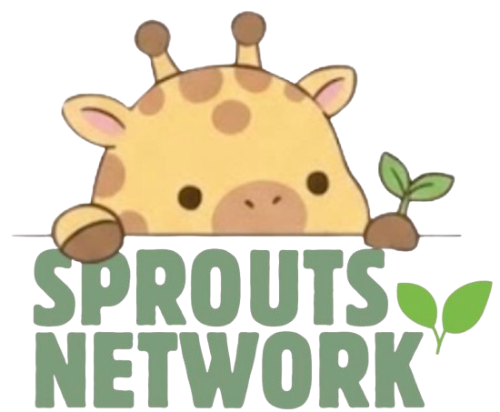
SSA/COMMUNITY PARTNERS


![Ascending Hope - Founded in 2016, Ascending Hope Community Services began with a focus on addressing problem gambling issues. Over the years, we have evolved into a comprehensive social service organisation dedicated to serving the needy and underprivileged in Singapore. Our mission is to empower individuals through various initiatives, ensuring that no one is left behind. By inspiring others to champion compassion within our society, we strive to create lasting positive change.
Ascending Hope Community Services has received approval as an Institution of a Public Character (IPC) by the Singapore Government’s Charities Unit.](images/ext_partners/AscendingHope.jpg)
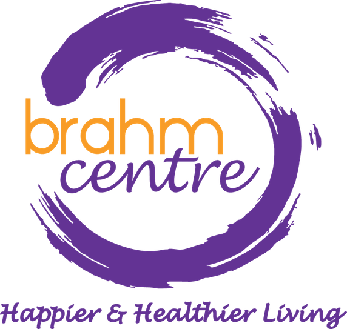


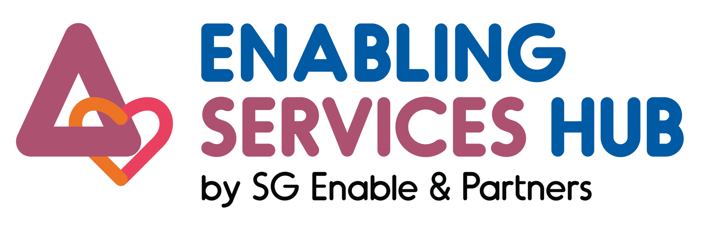
SCHOOL PARTNERS


THE BETTERING RUN PARTNERS


![City Sprouts is a social enterprise that was started in April 2019, inspiring communities to be more connected to food and their community and build a more sustainable society through sprouting green spaces and programs. We have redeveloped part of the former Henderson Secondary School (almost 10000sqm) into a food and social hub in the heartland of Redhill. Collocated with a nursing home and childcare center, we now hosts more than 30 allotment-based community farmers, 3 agrifood / agritech partners, various food waste management initiatives and an open air dining concept. In 2021, we curated more than 300 programs and events, impacting more than 4000 participants. At the same time, we launched 4 cycles of Growing For Good, a campaign where City Sprouts gave back to the community. For instance, we partnered with Love Bridges All, a social organisation focusing on emotional and social health, on an initiative to give out potted plants to 50 elderly households - in an effort to raise awareness of and curb elderly isolation. Beyond that, we worked with Advisors Clique to donate 4000 seedlings to 2000 recipients, many of which are residents from the Redhill neighbourhood.We were also fortunate to be awarded the inaugural SG Eco Fund by Ministry of Sustainability and Environment to design an environmental sandbox that brings together seemingly isolated domains of sustainability. Now called the Sustainability Center, the project aims to share knowledge, spark ideas and drive action within communities.](images/ext_partners/Citysprouts.svg)


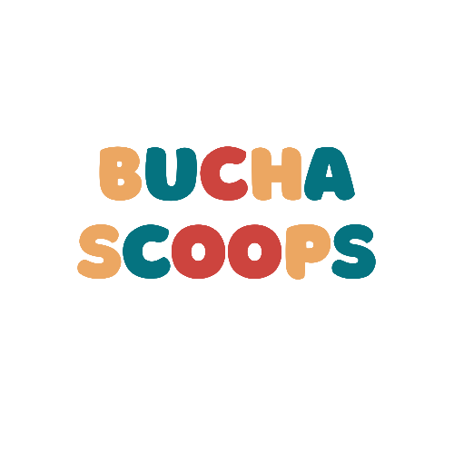
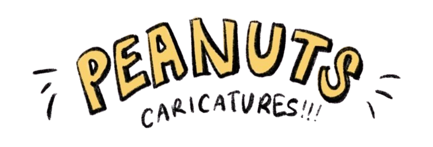
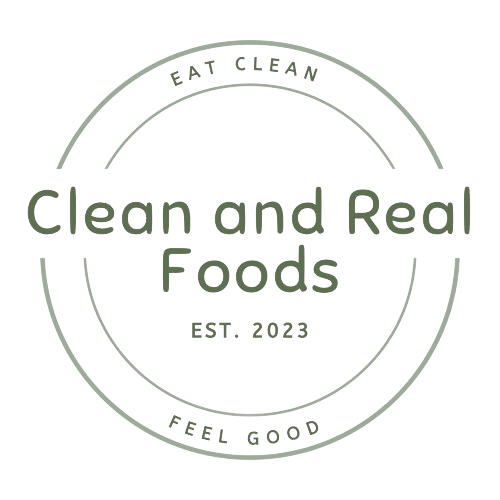
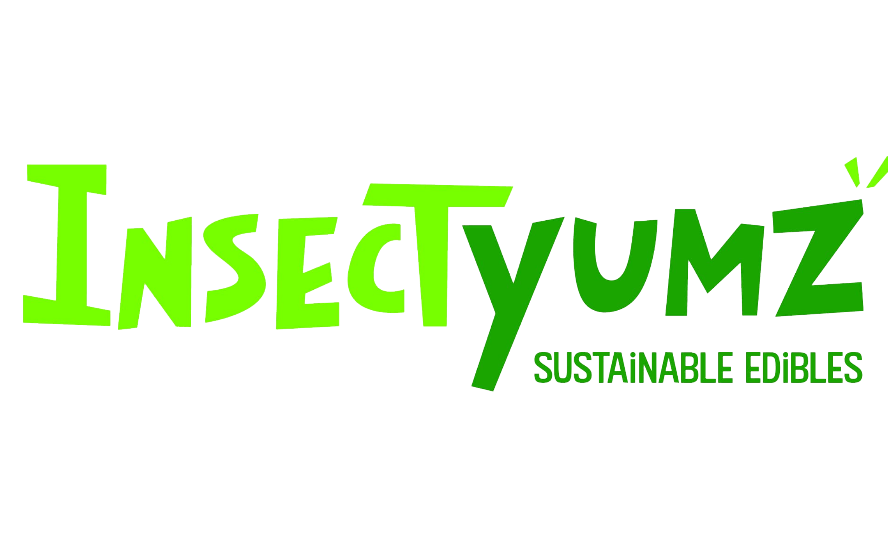


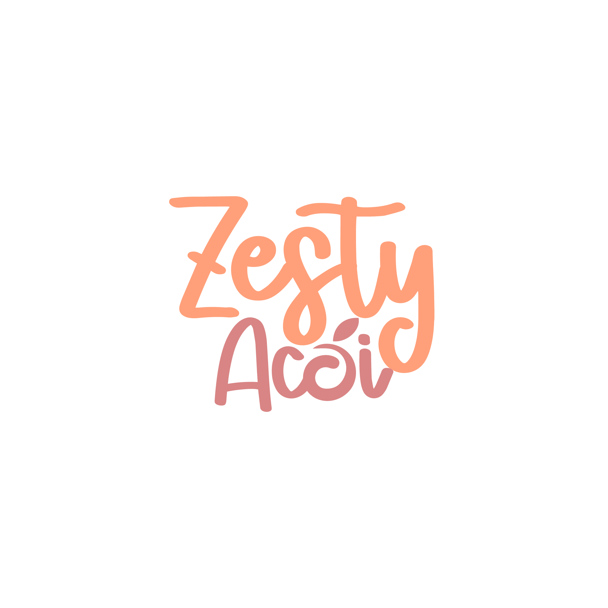
OTHER PARTNERS